Chambre dès 75 € la nuit, petit-déjeuner maison inclus
4,7/5 sur Google · 70 avis
Gîtes de France Mayenne
Accueil Vélo
Étape Vélo Francette®
Chambre d'hôtes référence
Chèques vacances ANCV
Ouvert toute l'année
Bienvenue
Un havre de paix entre ville et campagne
« Chers Hôtes, bienvenue aux Perrettes, un havre de paix entre ville et campagne, où nature et confort se rencontrent pour un séjour inoubliable ! Votre confort et votre santé sont essentiels pour moi. »
Entre Maine et Anjou, Les Perrettes est une ancienne ferme rénovée dans une architecture moderne. Du jardin, on rejoint à pied le centre-ville et ses commerces, ou les chemins de randonnée.
Centre-ville et commerces à 7 min à pied
Jardin, terrasses et cuisine d'été à disposition
Parking et borne de recharge voiture électrique (7 € hybride · 12 € électrique)
Garage fermé pour les vélos, prises pour VAE
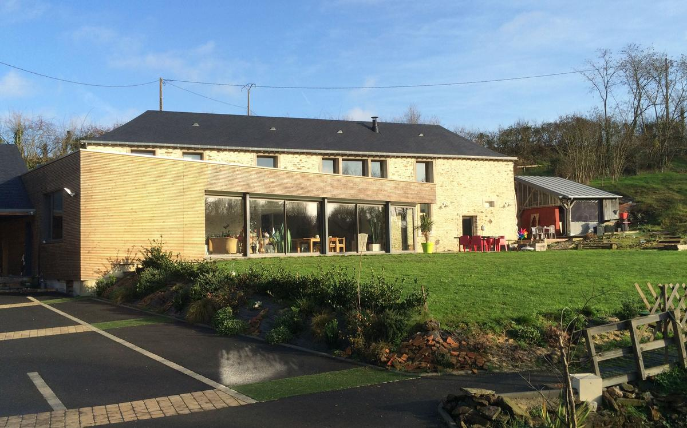
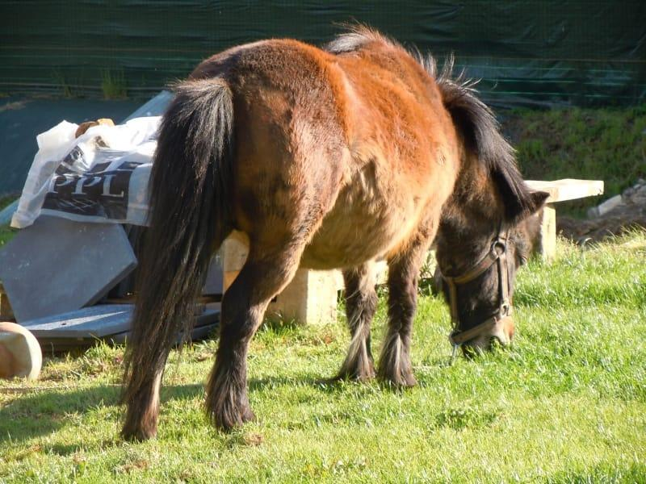
Chambres d'hôtes
Deux chambres et une suite familiale
Le prix de la chambre comprend la nuit et le petit-déjeuner, préparé avec les produits du jour de notre fabrication et des produits locaux. Draps et serviettes fournis, gel douche et savon. Arrivée à partir de 17h30, départ avant 10h30.
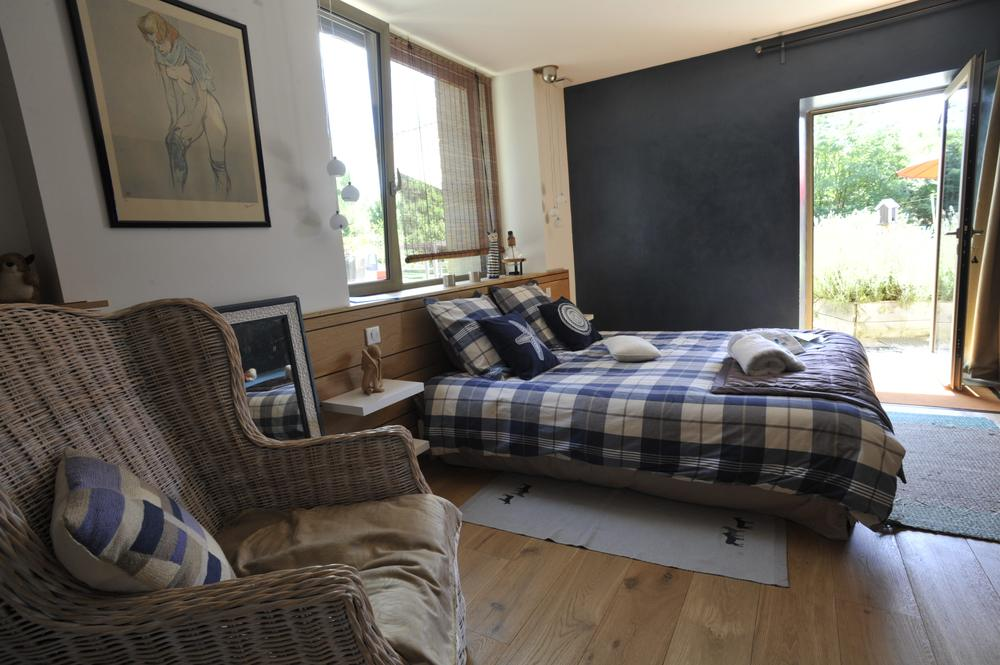
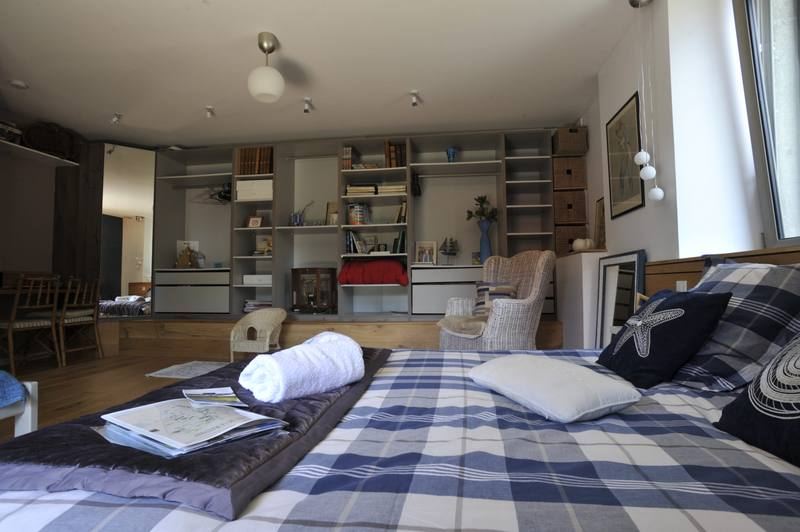
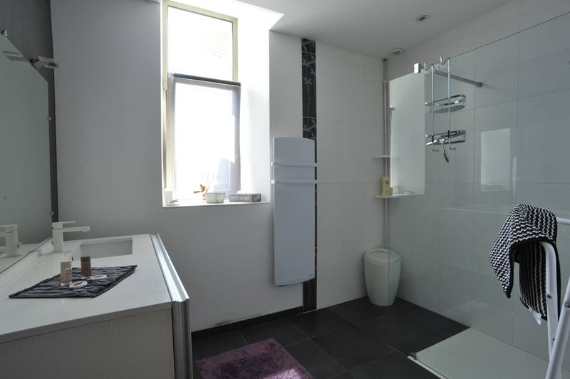
3 photos ⟷
Rez-de-chaussée · accessible PMR
Chambre Bleue
2 à 3 personnes
Lit double 160×200 + lit 90 cm · lit bébé possible
Douche à l'italienne, lavabo, WC indépendant
Entrée indépendante, vue côté jardin, accès terrasse
Tarifs 2026 par nuit, petit-déjeuner inclus. Enfants de moins de 2 ans : nuitée gratuite (lit enfant et table à langer prêtés). Animaux sur autorisation : 12 €/jour.
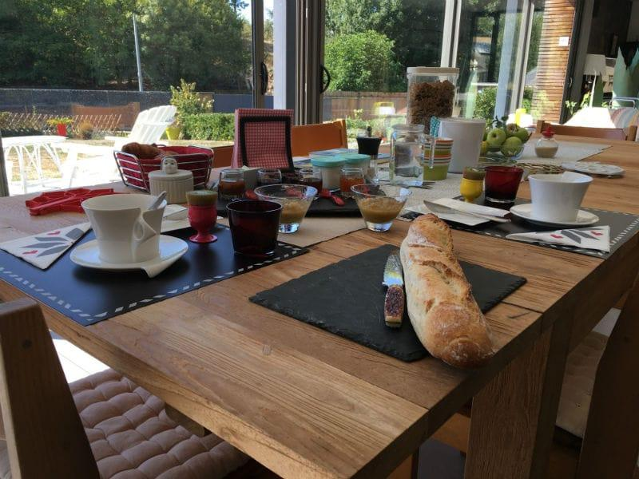
Le matin
Un petit-déjeuner fait maison
Un petit-déjeuner vous attend le matin avec les produits du jour de notre fabrication et des produits locaux — de quoi bien démarrer la journée, surtout si des kilomètres à vélo vous attendent.
Pour le soir : cuisine d'été à disposition (printemps, été, automne), repas en bocaux de fabrication locale servis avec dessert et pain, boissons sur place. Panier pique-nique préparé par notre boulangerie, sur demande la veille.
Location
Le gîte, 4 à 5 personnes
Vous cherchez un gîte de charme au calme et raffiné ? Orienté plein sud avec baie vitrée sur le jardin, le gîte des Perrettes est de plain-pied, tout confort et accessible aux personnes à mobilité réduite. Ouvert toute l'année, classé meublé de tourisme et labellisé Accueil Vélo.
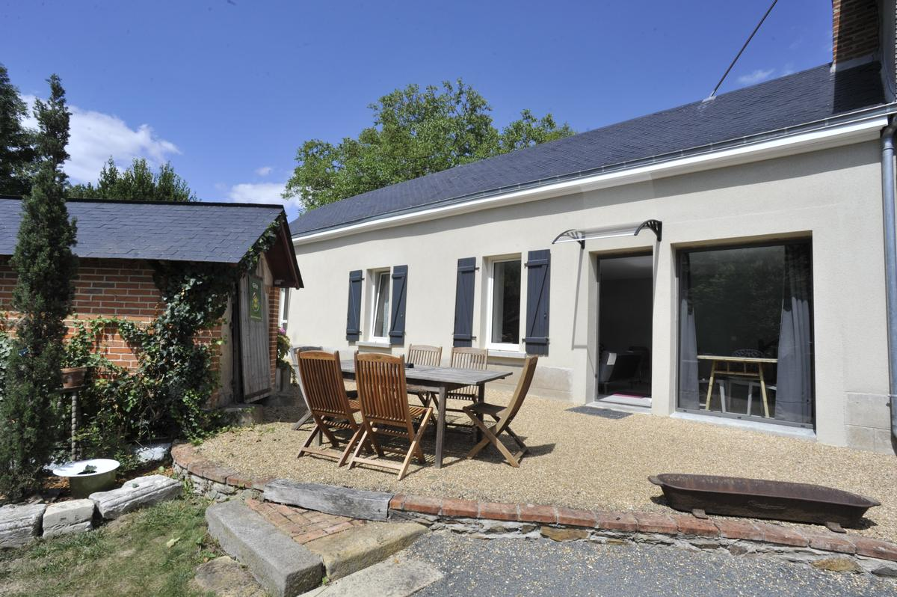
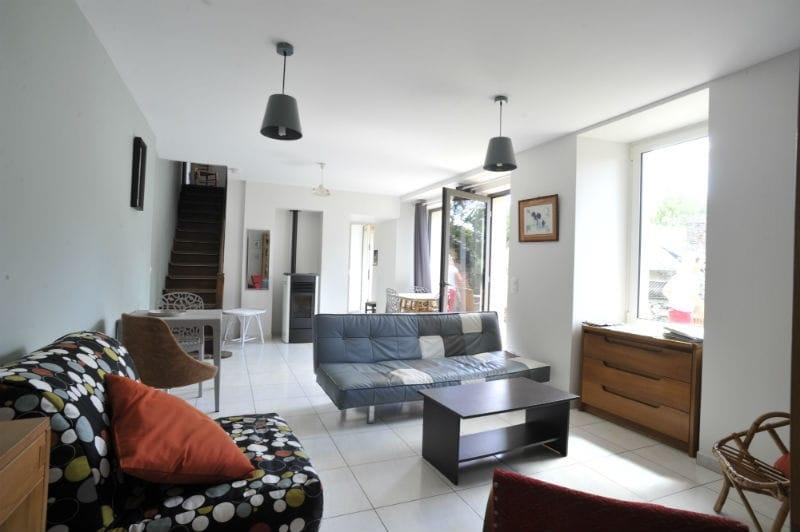
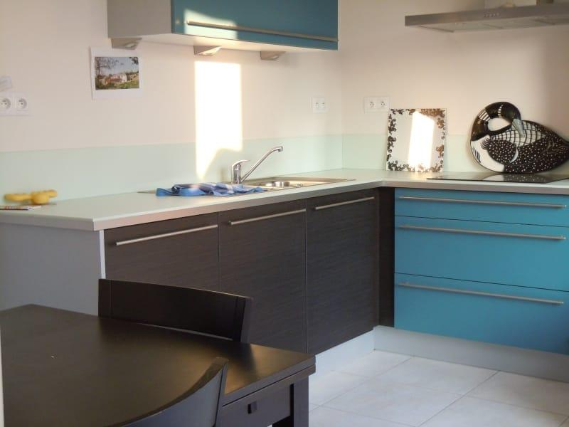
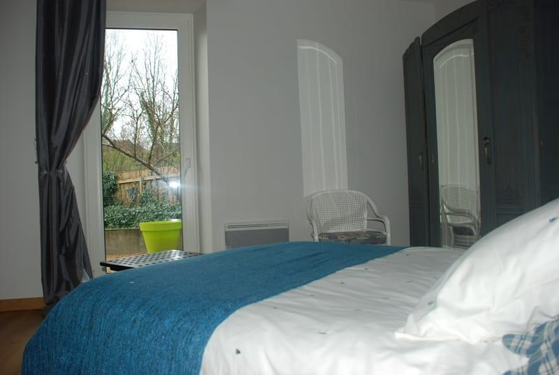
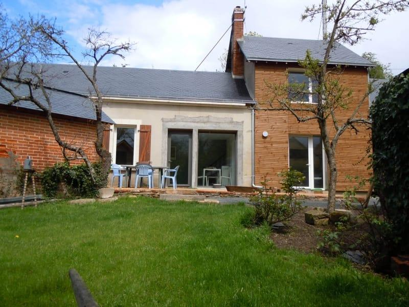
Ce que vous trouverez
2 chambres, chacune avec sa salle de bain et son WC privatifs
Cuisine moderne tout équipée
Salon avec télévision et accès internet
Chauffage par poêle à pellets
Jardin privatif, salon de jardin et barbecue
Place de parking et borne de recharge voiture électrique
Location de vélos possible, randonnée au départ du gîte
À moins d'1 km
Aviron, canoë, ski nautique, tennis, équitation, location de bateau électrique… et le centre-ville de Château-Gontier.
Famille 5 pers. · ouvriers 3 pers. — prix par séjour
Saison
Week-endven. soir → dim. 10h
Mid-weeklun. → ven. 10h
3–4 nuits
Semaine5 à 7 nuits
Basse saisonoctobre → mars · granulés en plus
220 €
250 €
280 €
340 €
Moyenne saisonmai, juin, septembre
275 €
340 €
300 €
350 €
Petites vacances scolaires
300 €
340 €
380 €
380 €
Haute saisonreste de l'année et Noël [dates à confirmer]
—
—
450 €
500 €
Nuit supplémentaire
60 €
—
60 €
60 €
Draps et lits faits à votre arrivée 10 €/lit
Linge de toilette 10 €/personne
Ménage de fin de séjour 45 €
Lit enfant et chaise haute prêtés gratuitement
Plusieurs semaines consécutives : réduction possible
Étape Vélo Francette® · Accueil Vélo
Votre étape entre Normandie et Atlantique
À 500 m du chemin de halage de la Vélo Francette, prenez le temps d'une courte parenthèse aux Perrettes, dans un ruban de verdure.
Garage fermé et sécurisé pour vos vélos
Prises pour recharger les batteries de VAE
Kit de dépannage et outils à disposition
Espace détente adossé à la colline, cuisine d'été avec barbecue, plancha, frigo, micro-ondes
Petit-déjeuner savoureux et fait maison avant de reprendre la route
Centre-ville à 7 min à pied pour vos ravitaillements
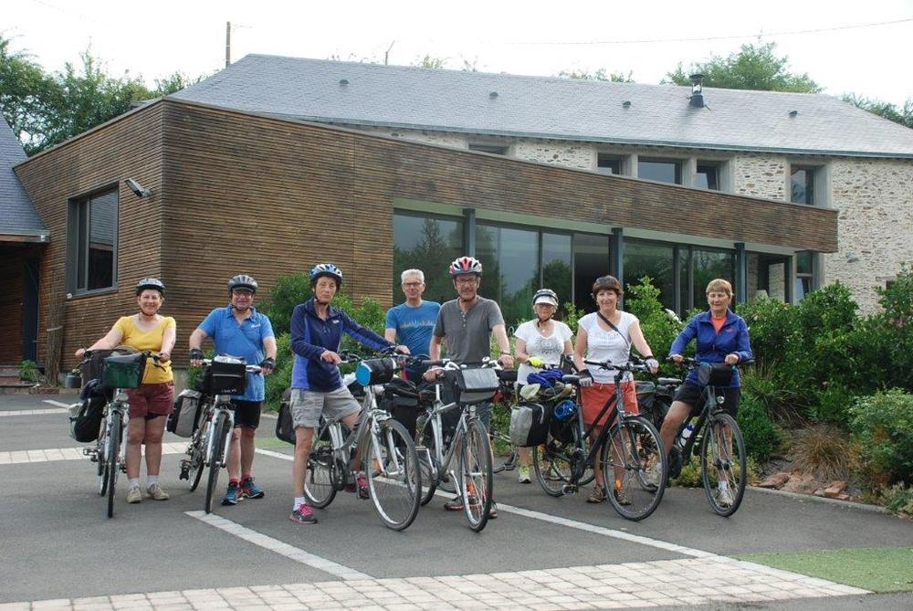
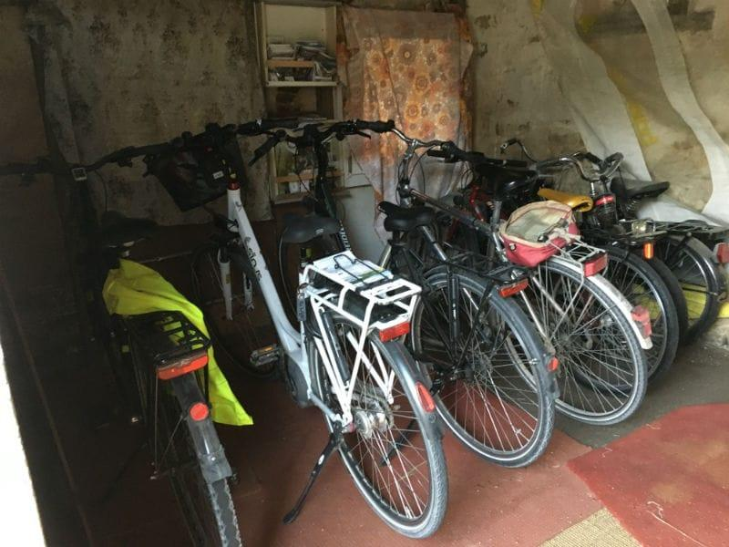
Visites & infos
Autour des Perrettes
À Château-Gontier
Refuge de l'Arche, Couvent des Ursulines, Chocolaterie Réauté, musée, espace culturel Le Carré, Jardin des Senteurs, le port et ses animations. Marché le jeudi matin.
En Mayenne et au-delà
Laval (musée d'Art naïf, centre historique), Musée Robert Tatin à Cossé-le-Vivien, Sainte-Suzanne et Saint-Denis-d'Anjou. Angers à 35 km, Terra Botanica à 40 km, Le Mans à 70 km.
Sport et nature
Balades à cheval, canoë-kayak, aviron, ski nautique, accrobranche — initiations et stages possibles. Randonnée sur de nombreux chemins balisés (guide mis à disposition).
Où manger ?
Les restaurants les plus proches sont à 7 minutes à pied : pizzeria, brasserie, le 2M, crêperie. Ou dînez sur place grâce à la cuisine d'été.
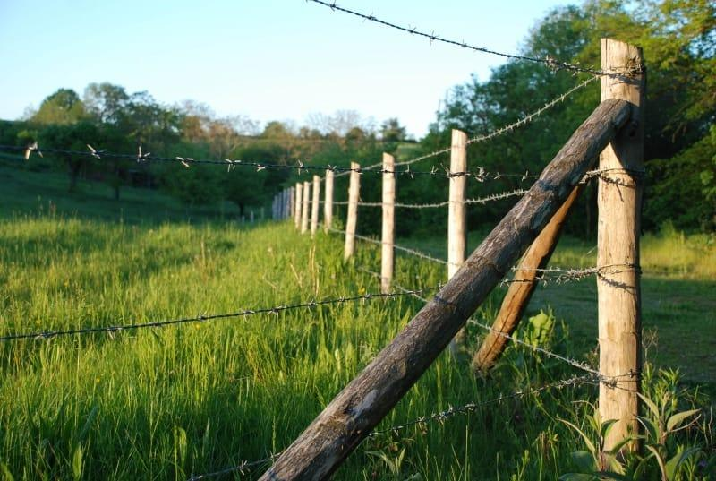
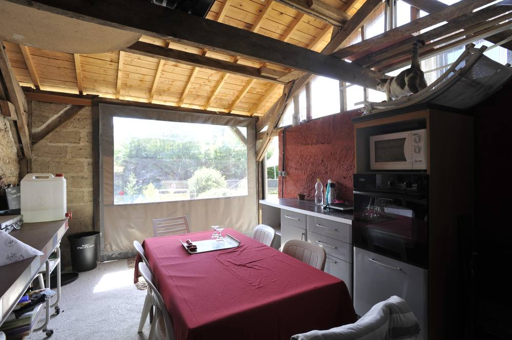
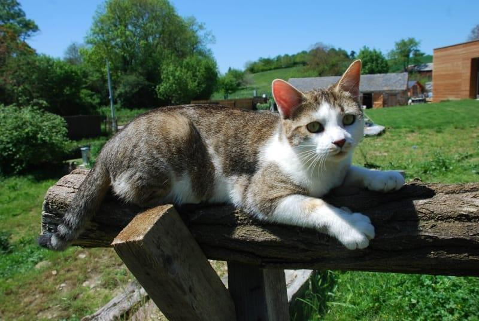
Réservation en direct
Vérifier les disponibilités
Indiquez vos dates : nous vous répondons directement, sans intermédiaire.
Réservation en ligne des chambres[Le module de réservation Open System actuel sera intégré ici lors de la mise en ligne]
Contact & accès
Nous trouver
Les Perrettes
Chemin des Perrettes
53200 Château-Gontier-sur-Mayenne